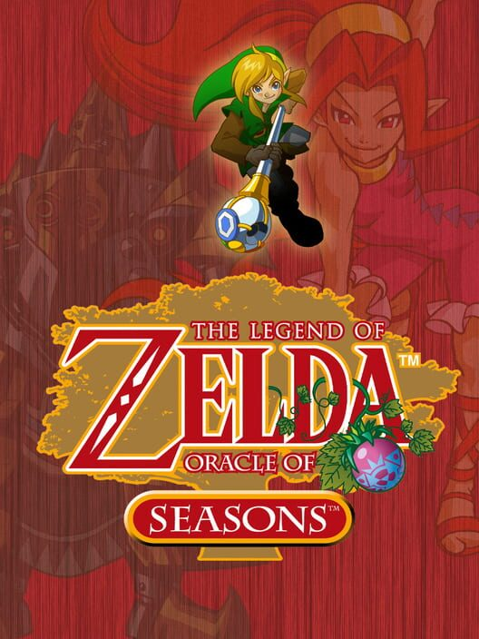

Oracle of Seasons betont dynamische Umweltveränderungen durch Jahreszeiten und bietet viele Rätsel, die durch Saisonwechsel gelöst werden. Als Teil der Oracle-Duologie bildet es zusammen mit Oracle of Ages ein vernetztes Abenteuer mit hoher Wiederspielbarkeit.
| Titel | The Legend of Zelda: Oracle of Seasons |
| Veröffentlichung | 2001 (verschiedene Regionen) |
| Plattform | Game Boy Color |
| Entwickler | Flagship (in Kooperation mit Nintendo) |
| Produzent | Capcom / Flagship |
| Komponist | Minako Adachi, Kiyohiro Sada |
Spielinhaltlich dreht sich Oracle of Seasons um saisonale Veränderungen als Kernmechanik: bestimmte Gebiete, Rätsel und Gegner ändern sich je nach Jahreszeit (Frühling, Sommer, Herbst, Winter), was kreative Umgehungen erfordert. Die Welt ist in Dungeons und Overworld-Puzzles strukturiert, viele Items dienen temporärem Zugriff auf neue Wege. Als Teil der Duologie ist das Game-Design darauf ausgelegt, mit dem Partner-Spiel (Oracle of Ages) verbunden zu werden, um zusätzlichen Content und ein größeres Finale zu ermöglichen.